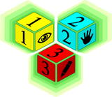

Main 123 Page Instructions.
The main 123 page is used to navigate to between the torso section pages.
To navigate to one of the pages click on either 1, 2, or 3
- Click 1: This will take you to the Observe module page.
- Click 2: This will take you to the Try module page.
- Click 3: This will take you to the Test module page.
Sidebar Navigation Information
The sidebar navigation buttons are used to quickly navigate between pages.
There are three different navigation cubes you will encounter.
Clicking the home icon will take you back to the home page.
The forward and back arrows take you sequentially through the site.
Clicking the 123 buttons will take you to the page that corresponds
with the number chosen.
Clicking the question mark buttons will open a help and information
page in a new browser tab.